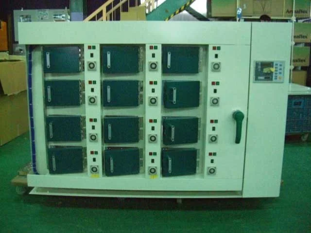
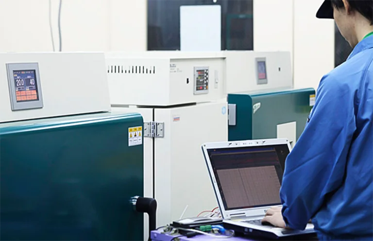
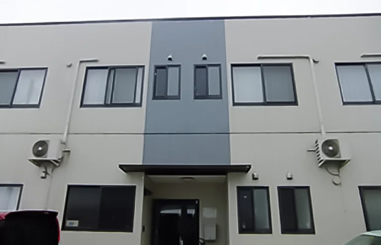

ENVIRONMENTAL TEST EQUIPMENT
その試験に、最適な一台を。
製品の品質と信頼性を確かめる環境試験装置。試験内容に合った標準製品の選定から、寸法・構造・温湿度条件に合わせた一台の設計・製造まで、ご相談ください。
CUSTOM ENGINEERING
特型・カスタマイズ装置
「既製の装置では試験対象が入らない」「必要な温湿度や搬入方法に合わない」――そんな課題を、装置選定の段階からご相談いただけます。標準品をベースにした仕様変更から、一台ごとの設計・製造まで。試験目的と設置条件に合わせて、無理なく使える一台を一緒に考えます。
- 試験対象・寸法・搬入条件に合わせた構造を検討
- 仕様が固まっていない段階から相談可能
- 設計・製造・検査までつながる体制

CUSTOM ENGINEERINGTECHNOLOGY & QUALITY
技術・品質と一貫製造
試験したい内容を理解するところから、意匠設計・設計・加工・組立・検査まで社内で工程をつなぎます。使いやすさや装置構造を製造現場とすり合わせながら検討できるため、標準品では難しいご要望にも対応方法を考えやすいことが強みです。

FROM PLANNING TO INSPECTION
相談から検査までをつなぐ技術
設計と製造の担当工程がつながることで、設置スペース・操作性・組立方法といった制約を早い段階から確認できます。最後の検査まで自社の工程を見渡して、お客様が求める試験を実施できる装置づくりを支えます。
01 相談・設計02 加工・製造03 組立・検査

SUSTAINABILITY & ENERGY
省エネルギーへの取り組み
試験装置は、導入時の性能だけでなく、日々の運転に必要な電力や長く使えることも重要です。いすゞ製作所は省電力モデル「みどりシリーズ」の開発などを通じ、試験目的に必要な性能とエネルギー使用の両立に取り組んできました。装置の選定と適切な運用・保守を通じて、設備を長く活用する視点も大切にしています。

CONTACT
お問い合わせへ →試験装置のご相談・お問い合わせ
「どの装置が合うか分からない」「既製品では条件が合わない」「使用中の装置を相談したい」など、目的に合わせてお問い合わせいただけます。分かっている条件やお困りごとからお聞かせください。